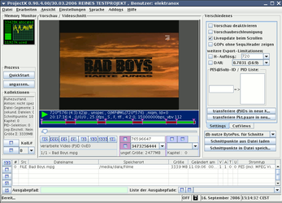
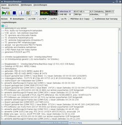
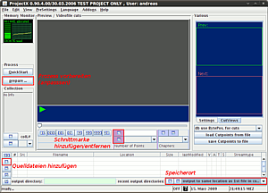

ProjectX
Dieser Artikel wurde für die folgenden Ubuntu-Versionen getestet:
Ubuntu 16.04 Xenial Xerus
Ubuntu 14.04 Trusty Tahr
Zum Verständnis dieses Artikels sind folgende Seiten hilfreich:
ProjectX  ist eine Software zum Schneiden und zum Extrahieren (Demultiplexen) der Video-, Audio- und sonstigen Daten aus einem MPEG-2 Transportstrom. Bei diesem Vorgang werden die einzelnen Datenströme auch gleich auf Fehler überprüft und synchronisiert. Die Software basiert auf Java und ist deshalb plattformunabhängig, d.h. sie steht auch unter Windows und MacOS-X zur Verfügung.
ist eine Software zum Schneiden und zum Extrahieren (Demultiplexen) der Video-, Audio- und sonstigen Daten aus einem MPEG-2 Transportstrom. Bei diesem Vorgang werden die einzelnen Datenströme auch gleich auf Fehler überprüft und synchronisiert. Die Software basiert auf Java und ist deshalb plattformunabhängig, d.h. sie steht auch unter Windows und MacOS-X zur Verfügung.
Es werden folgende Transportstromformate unterstützt:
DVB MPEG-2 Transport Stream (DVB MPEG2 TS), MPTS (Multiple Program Transport Stream)
Packet Video Audio (PVA, PSV, PSA, PAV)
MPEG Program Stream (MPEG1/2 PS)
Linux Video Disc Recorder (Linux VDR)
Packetized Elementary Stream (PES RAW Streams)
Elementary Stream (ES Streams)
|  |
| Hauptfenster |
|  |
| Statusfenster |
ProjectX kann verwendet werden, um z.B. Aufnahmen von TV-Sendungen mit dem Linux VDR so aufzubereiten, dass anschließend eine Video-DVD daraus erstellt werden kann.
Voraussetzungen¶
Das Programm erfordert eine Java-Laufzeitumgebung (JRE), welche mindestens der Version 1.6 (Java 6) oder neuer entsprechen sollte.
Installation¶
Via Paketquelle¶
ProjectX lässt sich über die Paketverwaltung installieren, dazu installiert man das gleichlautende Paket:
project-x (universe [2] )
 mit apturl
mit apturl
Paketliste zum Kopieren:
sudo apt-get install project-x
sudo aptitude install project-x
Nach Abschluss der Installation kann projectx aufgerufen werden [7]
Möchte man weitere Sprachen, z. B. Deutsch verwenden, geht man so vor, wie weiter unten beschrieben.
Quellcode kompilieren¶
Wie man ProjectX kompiliert, steht im Unterartikel ProjectX/Kompilieren.
Sprachen einfügen¶
Um andere Sprachen außer Englisch zur Auswahl zu haben (Deutsch, Niederländisch, Französisch, Italienisch und Schwedisch), lädt man sich von der ProjectX Homepage das Sprachpaket ProjectX_LanguagePack_0.9X.X.XX.zip herunter, welches sich im Ordner ProjectX_Source_0.9X.X.XX befindet. Entpackt befindet sich u.a. der deutsche Sprach-File pjxresources_de.properties neben den anderen oben erwähnten Sprachen im Ordner Project-X_0.xx.y/resources/.
Falls ProjectX aus dem Quellcode kompiliert wird, werden die *.properties-Dateien vor der Kompilierung in den /resources-Ordner entpackt.
Sollte ProjectX Via Paketquelle installiert worden sein, die Datei z.B. in den Ordner Download entpacken.
cd /usr/share/java/ sudo file-roller ProjectX.jar
Mit den 2. Terminalbefehl wird das File-Roller ausgeführt:
Im FileRoller klickt man auf "Datei zum Archiv hinzufügen" , danach für Via Paketquelle in den Ordner Download oder für aus dem Quellcode kompiliert in den Ordner /resources gehen und fügt die entsprechende für z.B.deutsch pjxresources_de.properties-Datei hinzu.
Danach einfach den File-Roller schließen und ProjectX neustarten. Es kann nun die neue Sprache ausgewählt werden.
Verwendung¶
Der grundsätzliche Umgang mit ProjectX soll hier anhand eines Beispiels mit einer TS-Datei (Transportstrom) erklärt werden. Es gibt zwei Möglichkeiten zum Extrahieren: mit der grafischen Oberfläche oder im Terminal.
Grafische Oberfläche¶
Importieren¶
 Zunächst wird der Transportstrom in ProjectX eingefügt. Dies kann über den Dialog "Datei -> Hinzufügen", die Tastenkombination Strg + O oder über das + links unten am Bildrand erfolgen. Es können auch mehrere Dateien hinzugefügt werden, falls der Transportstrom auf mehrere Dateien verteilt ist. Dabei sollte darauf geachtet werden, dass die Dateien in der richtigen Reihenfolge eingefügt werden (der erste Teil der Aufnahme zuerst).
Am Bildrand in der rechten unteren Ecke befindet sich ein Dropdown-Menü, mit dessen Hilfe man den Speicherort der exportierten Daten festlegen kann.
Bei Bedarf kann man das Video noch grob schneiden. ProjectX bietet hier allerdings keine akkuraten Möglichkeiten, weshalb dafür ein separates Programm wie Avidemux hinzugezogen werden sollte.
Exportieren¶
Um den Transportstrom zu exportieren, wählt man im Hauptfenster unter "Prozess" die Schaltfläche "anpassen...". Daraufhin öffnet sich das Prozessfenster. Es stehen verschiedene Aktionen zur Verfügung; zur Weiterverarbeitung empfehlen sich besonders "demultiplex" oder "to M2P". Während "demultiplex" alle Audio- und Videospuren in separaten Dateien exportiert, entsteht bei "to M2P" eine einzelne Datei, wobei hier darauf zu achten ist, dass eine eventuell existierende Verschiebung zwischen Audio- und Videostrom hier nicht von ProjectX kompensiert wird. In Avidemux kann man diese Verschiebung allerdings leicht ausgleichen.
Nun wird der Export über die Schaltfläche mit dem Play/Pause-Symbol initiiert.
Terminal¶
Mit dieser Variante kann man die oben beschriebenen Arbeitsschritte mit einem Befehl durchführen. Der Grundbefehl lautet:
projectx
Mit folgendem Befehl lassen sich alle verfügbaren Optionen im Terminal anzeigen:
projectx -?
Beispiel: Möchte man einen Transportstrom exportieren, der aus zwei Dateien besteht, z.B. REC.TS und REC.01, wird mit folgendem Befehl eine REC.m2p im selben Ordner erstellt:
projectx -tom2p REC.TS REC.01
Auf FAT32-Laufwerken sollte beachtet werden, dass die Videogröße 4 GB nicht überschreiten kann.
DVB Aufnahmen aufbereiten¶
Als weiteres Beispiel soll eine DVB-T Aufnahme A-V-synchronisiert und für die Weiterverarbeitung vorbereitet werden. projectx kümmert sich um die Aufbereitung und erstellt zwei Ausgabedateien (eine für das Video, eine für die Tonspur). Mit mplex werden die Datenströme wieder zu einer Datei vereinigt. Das aufgenommene Video muss in der Datei video.avi liegen:
projectx video
mplex -f 8 -o video.mpg video.{m2v,mp2}
Die Ausgabe wird dann in video.mpg gespeichert. Alle anderen erzeugten Dateien können nach Ausführung beider Befehle gelöscht werden.
Problembehebung¶
Falls man zur Grundeinstellung von ProjectX zurückkehren möchte, muss man die Datei X.ini im Benutzer-Homeverzeichnis löschen. Eine Deinstallation reicht dazu nicht aus.
Falls ProjectX nicht startet, hat man vielleicht nicht Sun Java als Standard-JVM gesetzt. Die Auswahl erfolgt im Terminal über den folgenden Befehl:
sudo update-alternatives --config java

- Erstellt mit Inyoka
-
 2004 – 2017 ubuntuusers.de • Einige Rechte vorbehalten
2004 – 2017 ubuntuusers.de • Einige Rechte vorbehalten
Lizenz • Kontakt • Datenschutz • Impressum • Serverstatus -
Serverhousing gespendet von